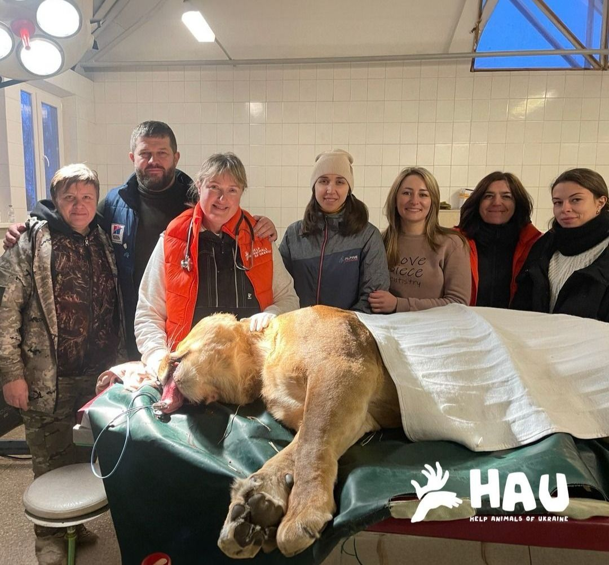
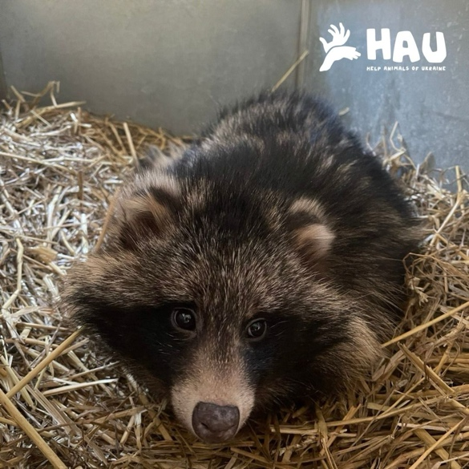

Понад 1000 врятованих: як працює Центр порятунку диких тварин під Києвом
Волонтери рятують хижих звірів, які постраждали від дій росіян чи поганого догляду.
Центр порятунку диких тварин — єдина в Україні організація, яка рятує великих хижаків, виключно завдяки пожертвам небайдужих. Центр був створений Наталією Поповою ще у 2018 році, під час повномасштабного вторгнення об’єднався з UAnimals, а в кінці 2023 року почав співпрацювати з командою HAU (Help Animals of Ukraine).
 |
Нині HAU займається евакуацією, реабілітацією звірів та навіть створили першу в Україні гарячу лінію захисту тварин. Завдяки роботі центру зараз працює п’ять екіпажів екстреної допомоги в Києві та області, 35 тварин перебувають у реабілітаційному центрі. Загалом за час повномасштабного вторгнення вдалося врятувати понад 1000 тварин.
Засновниця Центру порятунку диких тварин Наталя Попова. Фото: Центр порятунку диких тварин
Усі тварини знаходяться в центрі на реабілітації, далі для них підшукують домівку в Україні чи навіть за кордоном.
Повномасштабне вторгнення змінило життя не тільки людей, але й тварин. Засновниця Центру Наталія Попова та її команда — справжні герої. Я мала чудову можливість поспілкуватися з керівницею про те, з чого починалася ініціатива, як працює зараз і з якими викликами стикнулися.
— Пані Наталю, як і коли з’явилася ідея створення центру?
— Ідеї як такої в мене не було. З самого дитинства люблю тварин і все життя комусь допомагаю та лікую. У 2018 році до мене звернулася команда волонтерів з проханням врятувати левицю, яка була в критичному стані, зі зламаним хребтом. Я спочатку відмовилася, але мені пообіцяли забезпечити тварину м’ясом і побудувати вольєр для хижака.
 |
Я вже левицю забрала, а у тих, хто звернувся, не вийшло виконати обіцянку. Годувати й лікувати тварину — це одне, а от створити нормальні умови та побудувати великий, просторий вольєр на природному ґрунті я не мала змоги. Тоді я створила сторінку на фейсбуці — «Притулок для левиці» і почала звертатися за допомогою. Але натомість мені прийшло десятки звернень про допомогу. Тому поступово ініціатива почала розширюватися.
Ветеринарна клініка організації. Фото: Центр порятунку диких тварин
— А які види тварин трапляються вам найчастіше?
— Абсолютно різні. Лебеді, тигри, ведмеді, вовки, лисички, кажани, голубки, білки, їжаки — хто завгодно. Ми допомагаємо усім, хто потребує нашої опіки. Маленькі та великі, птахи та хижаки – кожне життя однаково важливе для нас.
— Зі скількох людей складається ваша команда для порятунку?
— Безпосередньо тваринами займаюся лише я, але в команді працюють люди, які будують вольєри та допомагають облаштовувати умови. Також HAU займаються фінансами, збирають кошти, які переказують добрі люди. У такій співпраці стало легше займатися евакуацією та реабілітацією тварин.
Волонтери команди центру порятунку диких тварин. Фото: Центр порятунку диких тварин
 |
— Чого зараз потребує притулок найбільше? Чи вистачає матеріальної підтримки?
— Насправді потреба не так у грошах, як в тому, що за них ми можемо придбати. Головне — це мʼясо, корм для тварин і також підручні матеріали. Зазвичай нам жертвують кошти, а ми вже потім за них купуємо все, що нам необхідно.
— Чи багато зараз людей, які готові стати опікунами для тварин?
— На жаль, ні. Один-два опікуни на тиждень з’являються. Ми створили систему віртуального опікунства, оскільки лікування та реабілітація диких тварин вимагають значних зусиль та витрат.
Людина сама обирає підопічного, робить донат від 1000 гривень для малих тварин (єнота, єнотоподібної собаки, їжаків та птахів), від 1500 гривень для більших (левів, тигра, леопарда). Але вказана сума є символічною, вона не покриває навіть один день витрат, наприклад, на лева.
— Чи є у вас тварини із зони активних бойових дій?
— Так, їх кидають зачиненими в клітках. Потім тварин знаходять військові й звертаюся до нас за порятунком. Дуже ціно, що наші захисники боряться за кожне життя, а ми можемо їм в цьому допомогти.
Співпраця організації з військовослужбовцями. Фото: Центр порятунку диких тварин
 |
— Чи є якась конкретна історія порятунку, яка вам найбільше запам’яталася?
— Таких сотні. Ну, певно, перша евакуація з Ясногородської страусової ферми. Коли ми туди заїхали, орки були поруч, прямо в лісі, де ми рятували тварин. Тоді я побачила перші прильоти на власні очі, приблизно на відстані 70 метрів. Але нас це не налякало.
— Як сьогодні можливо допомогти центру?
Після початку повномасштабного вторгнення витрат тільки додалося. Травмованих тварин стає все більше, тому є попит на ліки та продукти харчування.


Щобільше,
потрібно будувати нові вольєри та ремонтувати дах приміщення центру, який
постраждав через окупацію Київщини. Окрім звичайного пожертвування, можна стати
віртуальним опікуном для левів, тигриць, леопарда та інших тваринок, яких ви самі
оберете.
У кожного пухнастика своя історія та потреби, тому будь-яка підтримка важлива. Якщо ви все ж вирішили стати опікуном, вам не потрібно буде забирати тварину, достатньо переказати кошти на її утримання.
Зі свого боку ви отримаєте сертифікат про опікунство, фото звіра та зможете стежити за його подальшим станом. А інші способи допомоги тваринами та центру ви можете переглянути на сайті HAU та їхніх соціальних мережах, зокрема сторінці Facebook.
Кірвас Дарʼя